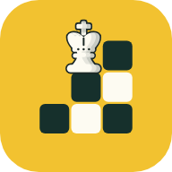

Terms of Use
Last updated November 13, 2026.
King Walk is a free chess puzzle game. These terms are short because there is not much to agree to: there are no accounts, no purchases and nothing you post.
Using the game
You may play King Walk for free, on the web or in the app, for as long as you like. The iOS app is also covered by Apple's standard Licensed Application End User License Agreement.
Your puzzle rating
The rating measures how you do on the game's puzzles. It is not an official chess rating from any federation or website.
Content and code
The puzzles come from the Lichess puzzle database, which Lichess released into the public domain. King Walk is not made or endorsed by Lichess. The game's code, pieces and artwork are released under the MIT license, and the parts made by others keep their own licenses, as listed under Credits in the game's menu.
No warranty
King Walk is provided as it is, without any warranty. The developer is not liable for any loss arising from its use, including lost progress, to the extent the law allows.
Changes and questions
If these terms change, this page will say so and show a new date. Questions: @tensafefrogs on X.